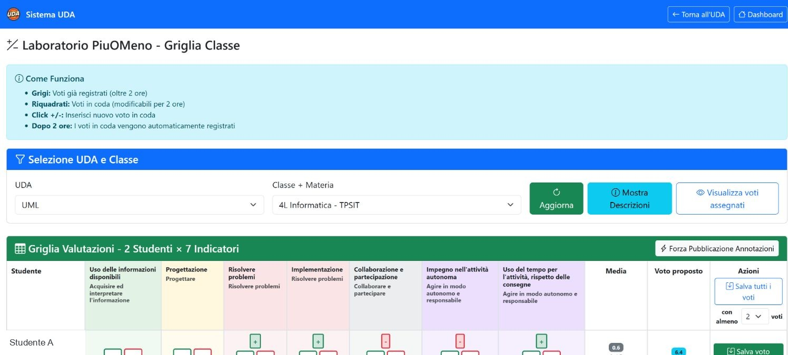
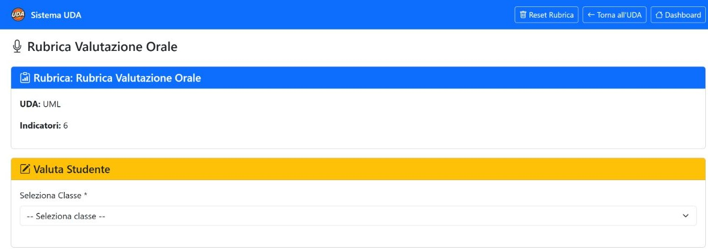
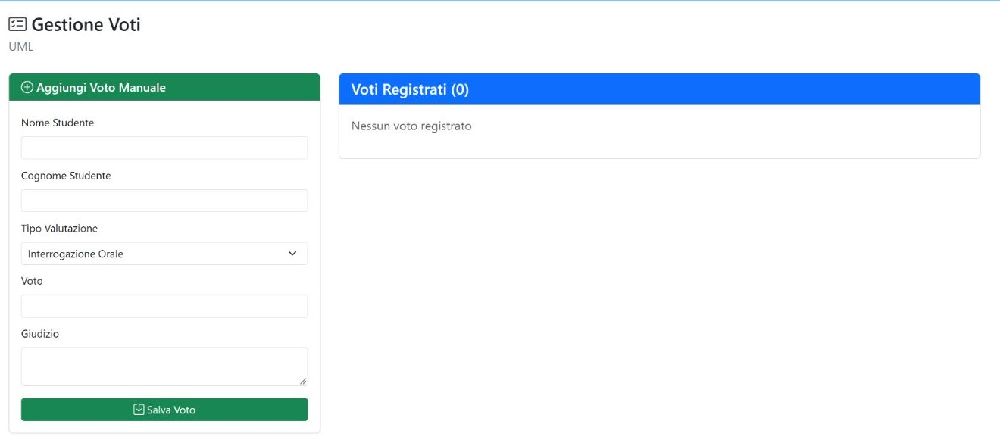

Capitolo 06 · valutare e pubblicare
Valutazioni e registro
L’UDA offre rubriche per le osservazioni orali e di laboratorio e una pagina per i voti. Quando un voto è pronto, la pagina voti permette di selezionare quelli non ancora inviati e pubblicarli sul registro.
Griglia di laboratorio

| Controllo | Funzione |
|---|---|
| UDA / classe / materia | Sceglie l’unità, il gruppo e la materia del contesto di valutazione. Verifica il gruppo prima di inserire osservazioni. |
| Aggiorna | Ricarica la griglia con la selezione corrente. |
| Mostra descrizioni | Espande o nasconde le descrizioni degli indicatori. |
| Visualizza voti assegnati | Mostra la vista dei voti già attribuiti nel contesto selezionato. |
| Forza pubblicazione annotazioni | Mostra una richiesta di conferma e, se confermata, pubblica le annotazioni in coda. La richiesta è il punto di controllo: non viene mostrata un’anteprima separata. |
| + / − nella cella | Aggiunge o riduce il livello di valutazione e mette la modifica in coda. |
| Salva voto | Registra il voto della riga quando sono rispettate le condizioni mostrate nella griglia. |
| Salva tutti i voti | Registra in blocco i voti in coda quando sono raggiunte le soglie minime indicate. |
Finestra di correzione. La pagina distingue le valutazioni in coda da quelle già registrate: quelle in coda restano modificabili per due ore; dopo la registrazione la griglia le mostra come consolidate. Nella schermata consultata risultavano cinque valutazioni in coda, zero registrate e cinque complessive. Prima di usare i comandi di salvataggio, ricontrolla gruppo, studente e indicatori.
Rubrica orale

Seleziona il gruppo nel menu e consulta gli indicatori prima di assegnare una valutazione. Nell’UDA osservata il selettore era vuoto, quindi la schermata non mostra una classe preselezionata.
| Controllo | Funzione |
|---|---|
| Reset Rubrica | Chiede conferma e poi cancella la rubrica e le valutazioni associate all’UDA. È un’azione distruttiva: non usarla durante la sola consultazione. |
Voti e pubblicazione sul registro

| Campo o pulsante | Funzione |
|---|---|
| Nome e cognome | Identifica lo studente a cui si riferisce il voto. |
| Tipo | Indica la tipologia della valutazione, ad esempio orale, scritta, pratica o test. |
| Voto | Inserisce il valore numerico da registrare. |
| Giudizio | Permette di aggiungere una nota descrittiva. |
| Salva voto | Registra il voto nell’elenco dell’UDA. |
| Pubblica sul registro | Apre la selezione dei voti non ancora pubblicati; spunta i record da inviare e conferma con Pubblica Selezionati. |
| Modifica / elimina voto | Consente di correggere o rimuovere il singolo record prima della pubblicazione, secondo le azioni presenti nella riga. |
| Elimina Selezionati | Rimuove i voti selezionati dopo la conferma proposta. Controlla con attenzione quali righe sono spuntate. |
- Registra il voto nella pagina dell’UDA e verifica studente, tipologia, valore e giudizio.
- Controlla che il voto sia associato al gruppo corretto tra 4L e 4L Informatica.
- Apri Pubblica sul registro e seleziona solo i voti che vuoi trasmettere.
- Rivedi il riepilogo e usa Pubblica Selezionati per completare l’operazione.
Stato osservato. UML non conteneva voti registrati. Non è stato inserito né pubblicato alcun voto. La pubblicazione sul registro si attiva quando esistono voti selezionabili.